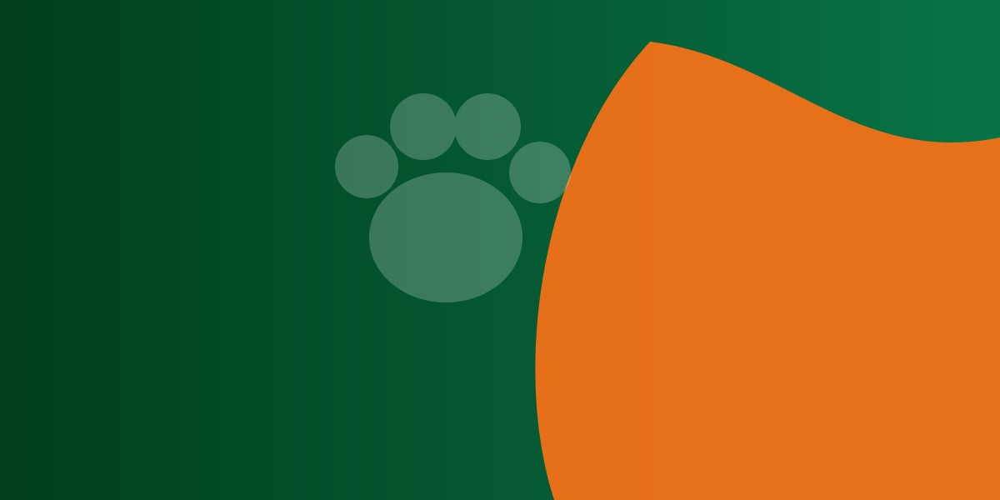

AcolhimentoCuidado em cada gesto
Lagoa da Prata · MG
Proteção que acolhe.
Proteção que acolhe.
Amor que transforma.
Pessoas unidas pelo cuidado e pelo respeito aos animais de Lagoa da Prata. Conheça quem faz parte dessa história.
Quem somos
Uma rede de carinho por todas as formas de vida.
A Associação de Proteção Animal de Lagoa da Prata reúne pessoas que acreditam que todo animal merece cuidado, dignidade e respeito.
Nosso trabalho nasce da colaboração entre voluntários, apoiadores, parceiros e a comunidade. Juntos, fortalecemos a proteção animal e ajudamos a construir uma cidade mais consciente e acolhedora.
ColaboraçãoUma causa feita em conjunto
RespeitoCompromisso com a vida
Galeria da APA
Ações, resgates e recomeços.
Conheça as iniciativas da associação, os animais que receberam cuidado e as histórias que nasceram de cada acolhimento.
Ações realizadas
APAC + APA
Casinhas para animais de rua
Confecção de casinhas de madeira para proteger os animais em situação de rua de Lagoa da Prata.
Ferinhas
Feirinha de adoção
Feirinhas de adoção voluntária e consciente dos animais resgatados em Lagoa da Prata.
Ação 03
Animais resgatados
Histórias que transformam

História 01
História 02
História 03
Nossos colaboradores
Gente que faz a diferença.
Uma causa coletiva, construída por pessoas que doam tempo, carinho e conhecimento.
Nossos parceiros
Parcerias que fortalecem a proteção animal.
Espaço preparado para apresentar as empresas e organizações que caminham com a APA.
+Parceiro 1
+Parceiro 2
+Parceiro 3
+Parceiro 4
Seja doador
Sua ajuda também transforma vidas.
Escaneie o QR Code no aplicativo do seu banco ou copie a chave Pix. O valor da contribuição é escolhido por você.
Antes de confirmarVerifique no aplicativo se o recebedor corresponde à Associação de Proteção Animal.
QR Pix estático · sem valor fixo
Chave Pix · CNPJ
52.609.619/0001-00
Associação de Proteção Animal
Lagoa da Prata · MG